Dân tộc Nùng


Trang phục dân tộc Nùng giản dị mà trang nhã, chủ yếu màu chàm, kiểu dáng gọn gàng, thể hiện lối sống cần cù và nét văn hóa truyền thống của người Nùng vùng núi phía Bắc.
Dân tộc Thái
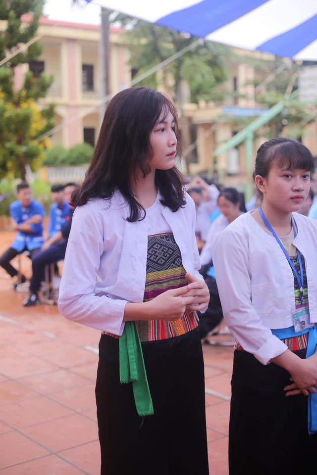 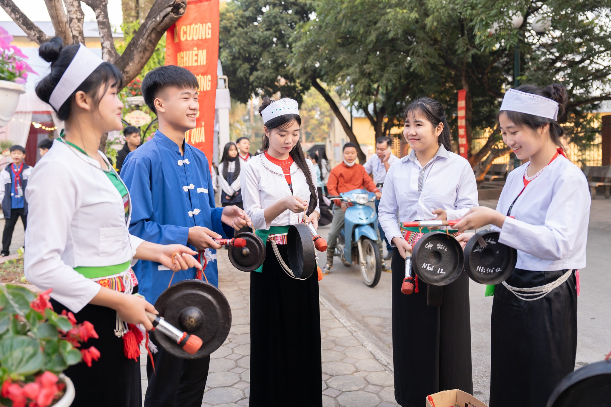 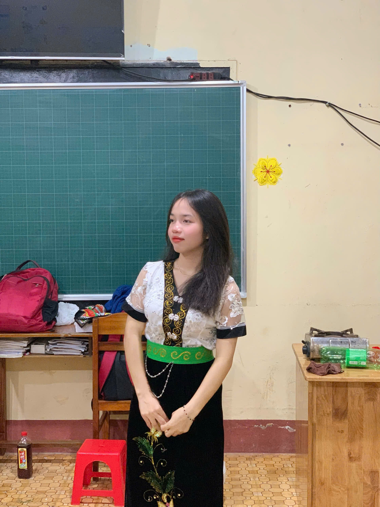Dân tộc Thái Trang phục truyền thống của dân tộc Thái nổi bật bởi vẻ đẹp dịu dàng và tinh tế. Phụ nữ Thái thường mặc áo cóm bó sát, làm nổi bật dáng người thon thả, kết hợp với váy dài màu sẫm tạo nên vẻ thướt tha, nền nã. Hoa văn trên trang phục được dệt công phu, mang ý nghĩa gắn liền với thiên nhiên, ước vọng về cuộc sống ấm no, hạnh phúc. Nét độc đáo của trang phục dân tộc Thái chính là sự hài hòa giữa nét đẹp hình thể và chiều sâu văn hóa truyền thống.
Dân tộc S'tiêng, M'nông
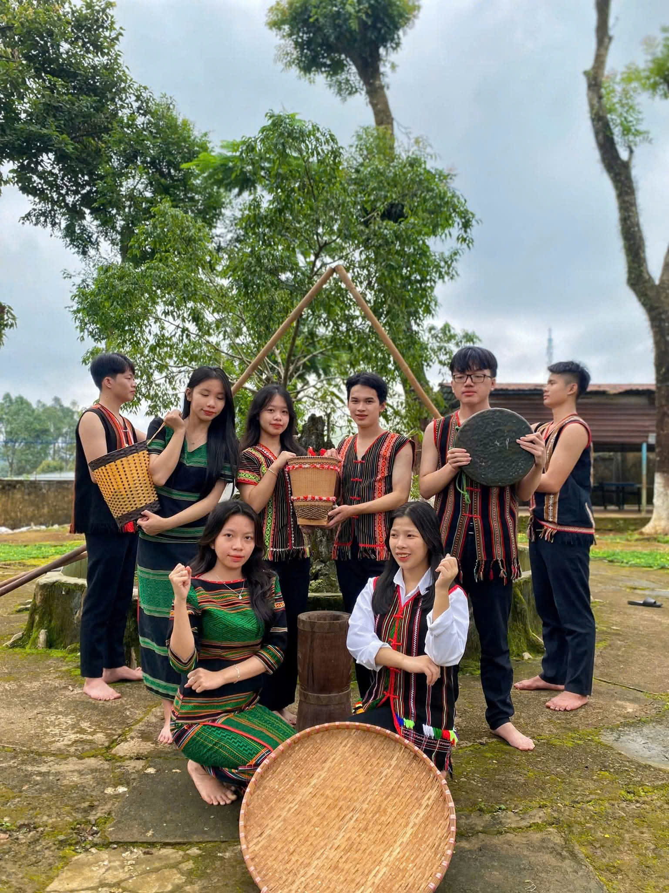 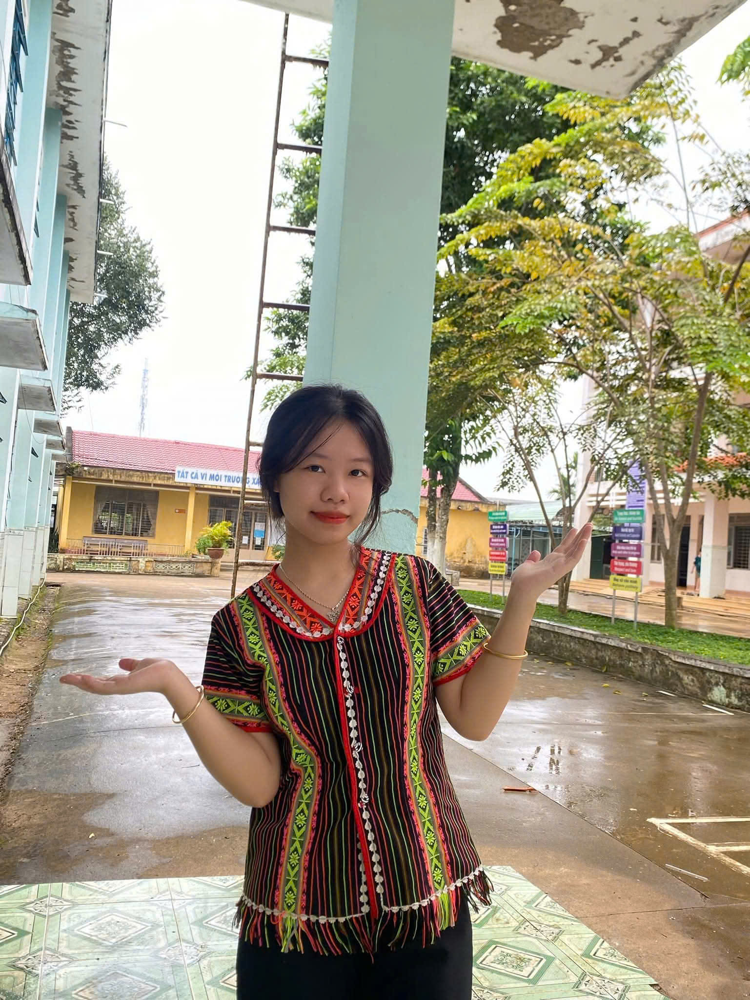 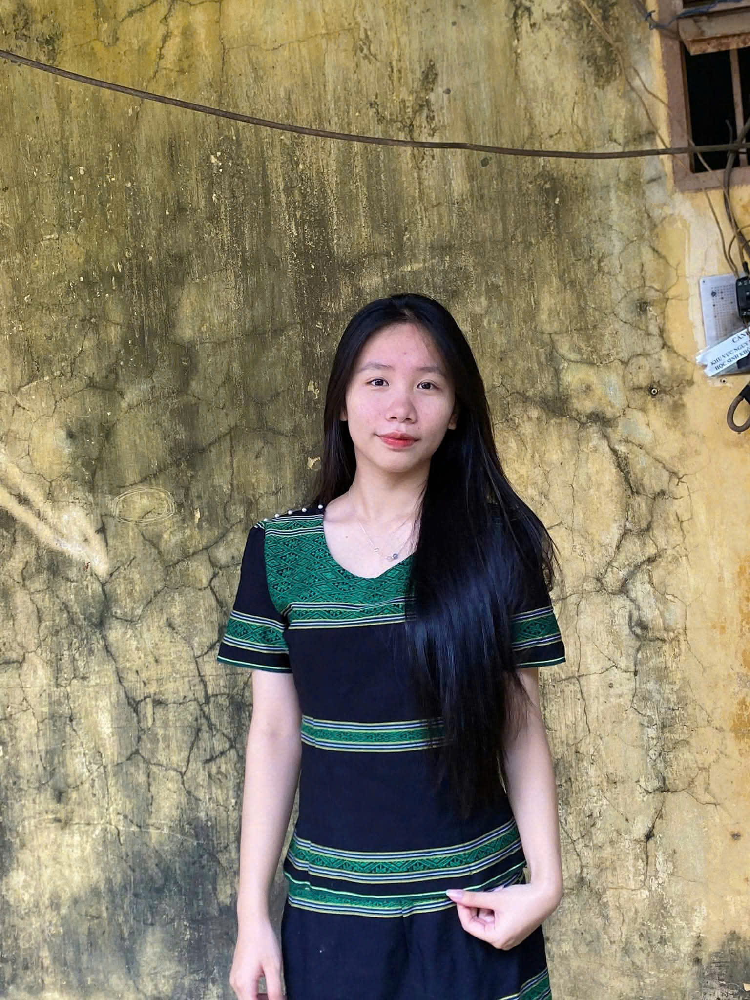Dân tộc M’nông – S’tiêng Tại Trường nội trú Điểu Ong, học sinh dân tộc M’nông và S’tiêng chiếm số lượng đông, góp phần tạo nên bản sắc văn hóa đa dạng của nhà trường. Trang phục truyền thống của hai dân tộc mang vẻ đẹp mộc mạc, khỏe khoắn, gắn liền với đời sống núi rừng Tây Nguyên. Chất liệu thổ cẩm với gam màu sẫm làm chủ đạo, hoa văn đơn giản nhưng giàu ý nghĩa, phản ánh tinh thần bền bỉ và sự gắn kết cộng đồng. Những bộ trang phục ấy không chỉ là nét đẹp truyền thống mà còn thể hiện niềm tự hào văn hóa của học sinh M’nông – S’tiêng trong mái trường Điểu Ong.
Dân tộc Dao
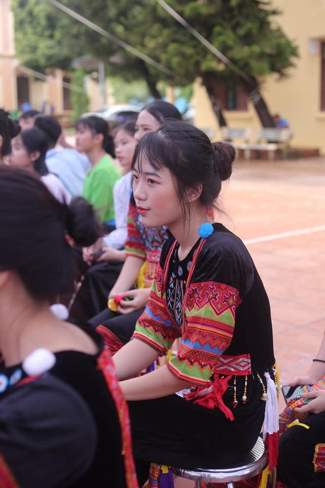 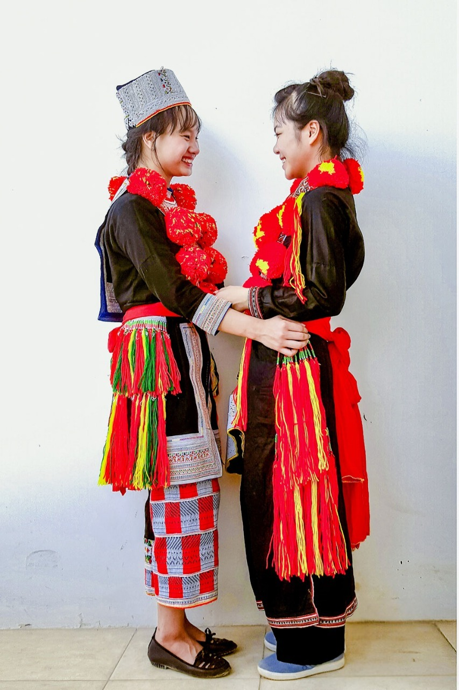Trang phục dân tộc Dao nổi bật với màu chàm làm nền, hoa văn thêu tay cầu kỳ và khăn đội đầu đặc trưng, thể hiện bản sắc văn hóa và đời sống tâm linh phong phú của người Dao.
Dân tộc Kinh
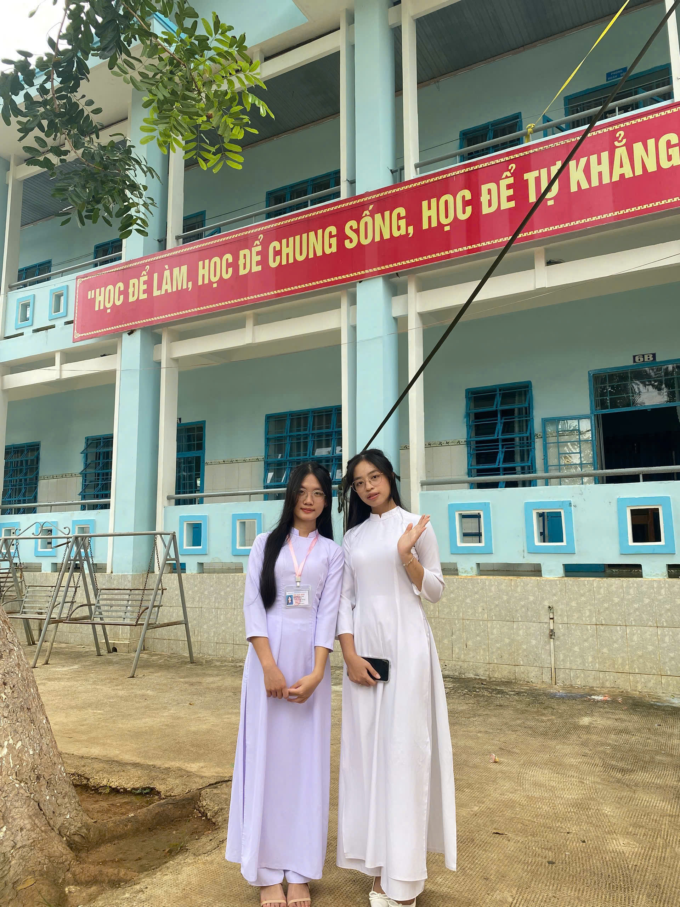 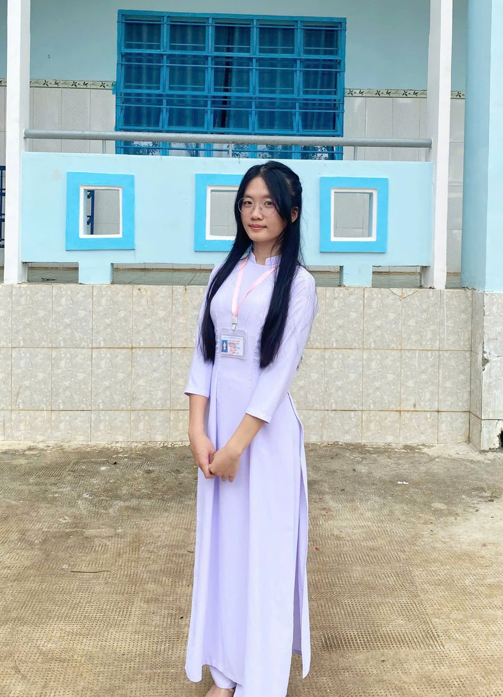 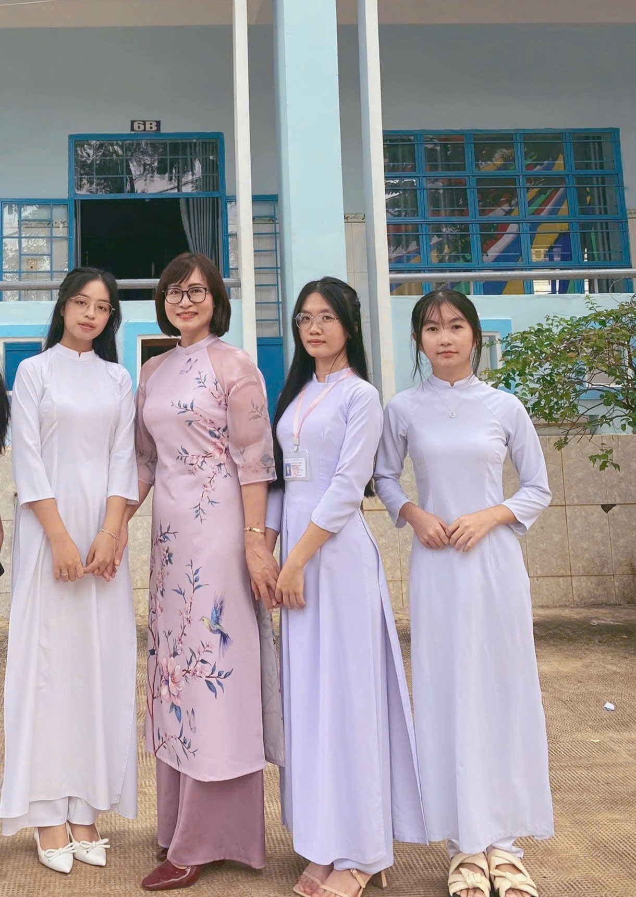Trang phục dân tộc Kinh mang vẻ đẹp giản dị, thanh lịch và tinh tế, tiêu biểu nhất là áo dài. Áo dài thường được may bằng lụa hoặc vải mềm, ôm dáng vừa phải, thể hiện nét duyên dáng, kín đáo của người phụ nữ Việt Nam. Trang phục của người Kinh không quá cầu kỳ về hoa văn mà chú trọng vào đường nét, màu sắc nhã nhặn, phù hợp với khí hậu và đời sống sinh hoạt, qua đó phản ánh bản sắc văn hóa truyền thống lâu đời của dân tộc.